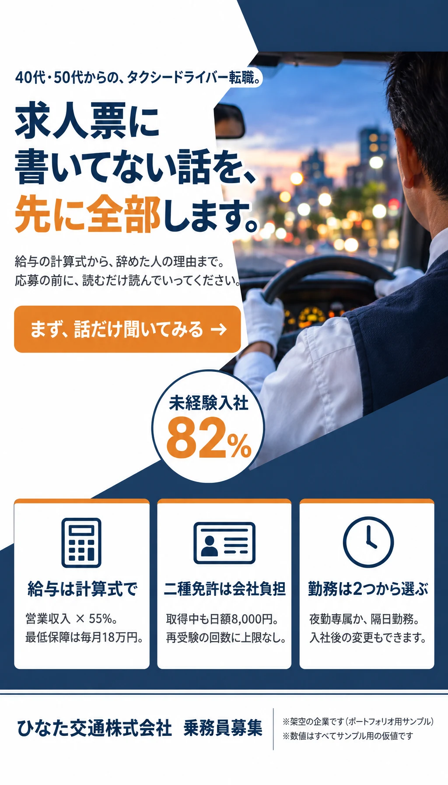
まず、話だけ聞いてみる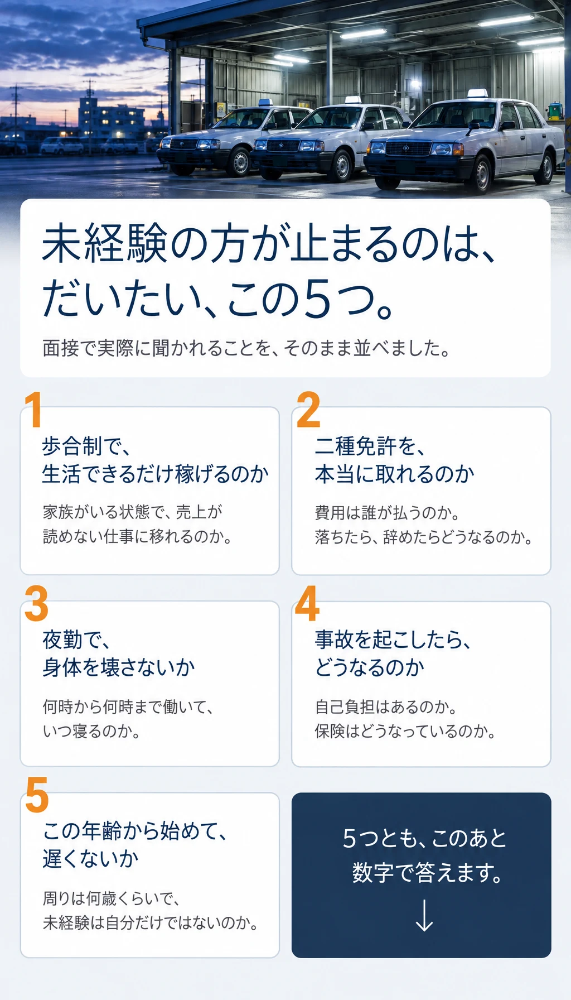
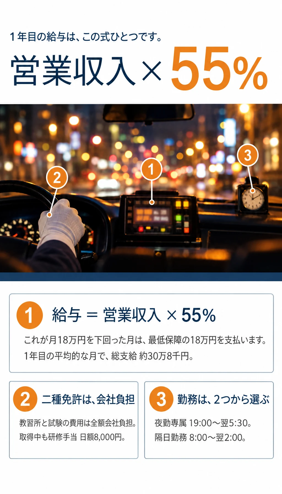
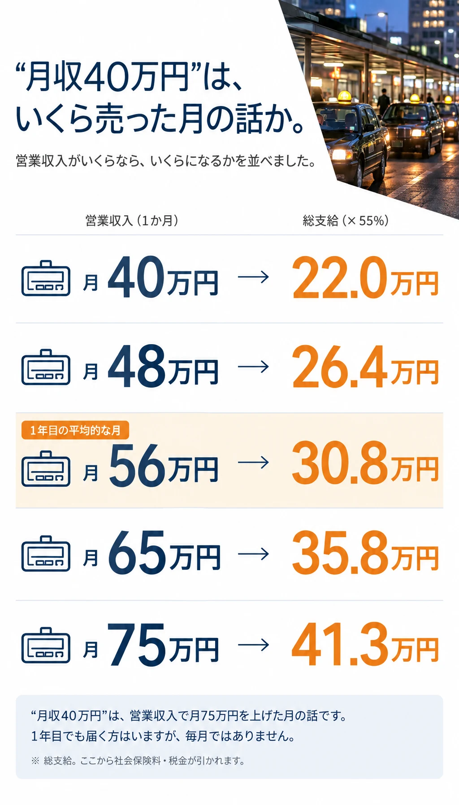
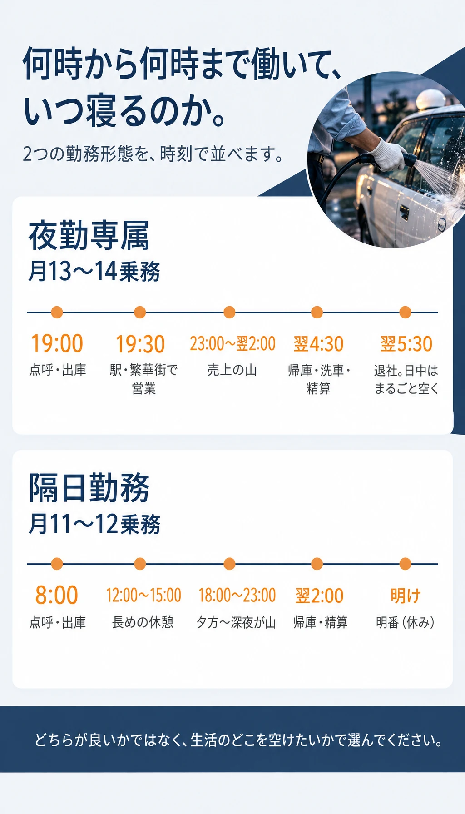
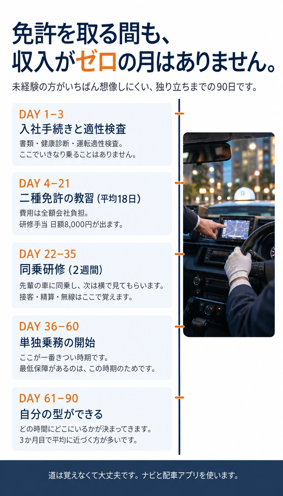
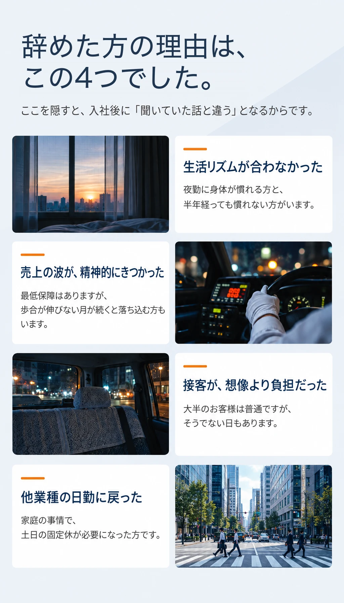
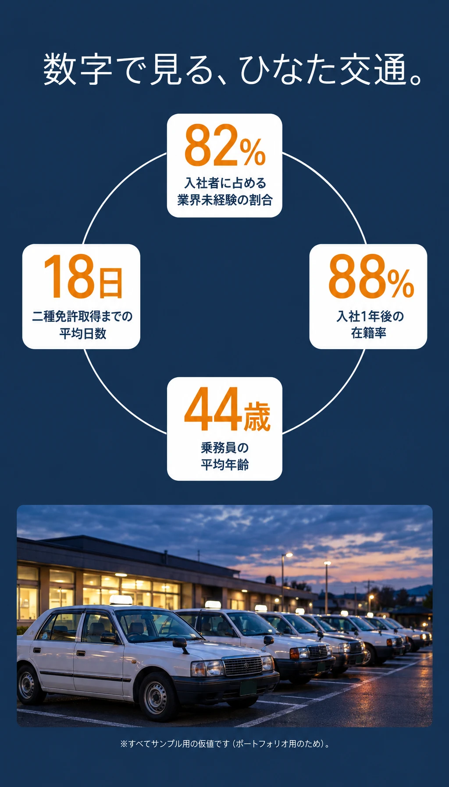
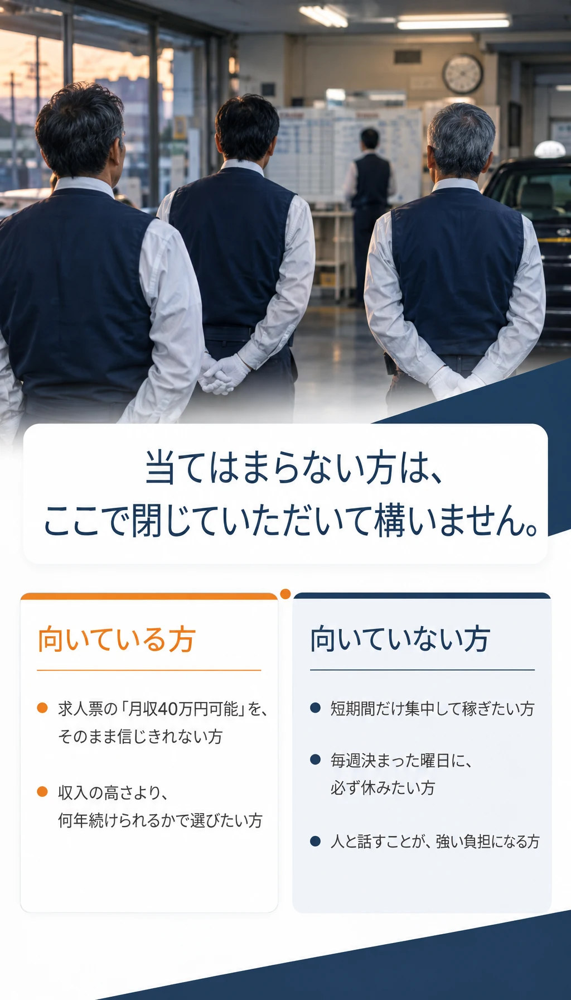
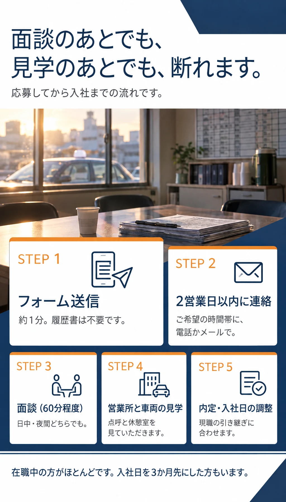
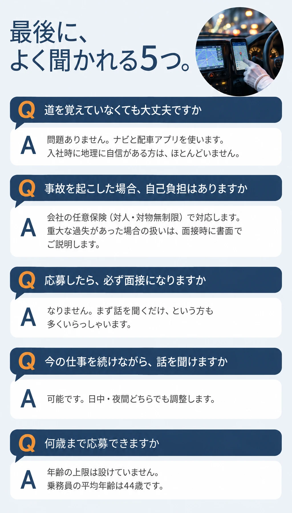
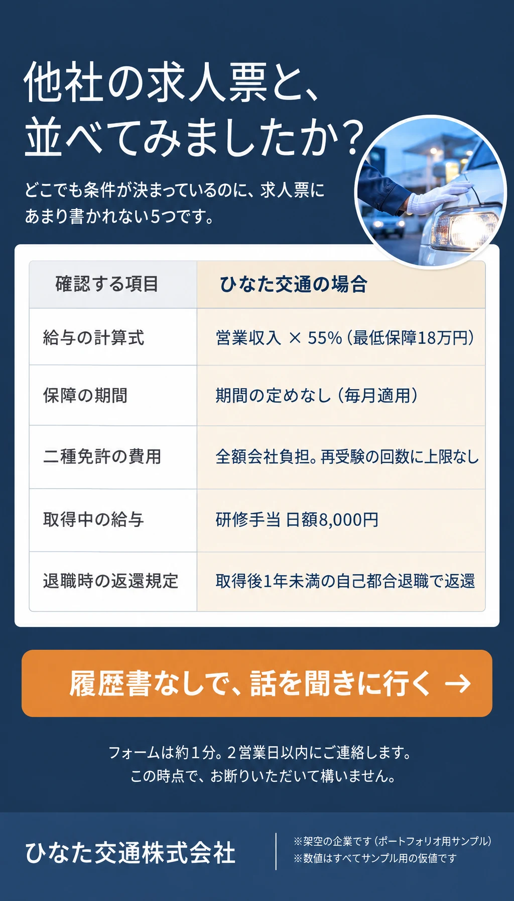
履歴書なしで、話を聞きに行く話を聞く日を決める
フォームは約1分。履歴書は不要です。
2営業日以内に、ご希望の時間帯にご連絡します。
このページはポートフォリオ用のサンプルのため、申込フォームはつながっていません。
実案件では、ここに【申込フォームのURL】が入ります。
会社概要
お名前と連絡先をお預けいただく先です。先に開示しておきます。
| 商号 | ひなた交通株式会社 |
|---|---|
| 所在地 | 〇〇県〇〇市〇〇町1-2-3（本社営業所） |
| 設立 | 1987年4月 |
| 代表者 | 代表取締役 〇〇 〇〇 |
| 資本金 | 3,000万円 |
| 事業内容 | 一般乗用旅客自動車運送事業 |
| 許可番号 | 〇〇運輸局長 許可 第〇〇〇号 |
| 車両台数 | 48台 |
| 従業員数 | 96名（うち乗務員 82名） |
| 加入保険 | 対人・対物無制限の任意保険に全車加入。社会保険完備 |
| 個人情報 | ご入力いただいた情報は採用選考の目的にのみ使用します |
※上記はすべて架空の設定です。実案件では、実在の登記情報・許可番号・保険の加入状況が入ります。
※写真はすべてAIで生成したイメージです。実在の人物・車両ではありません。